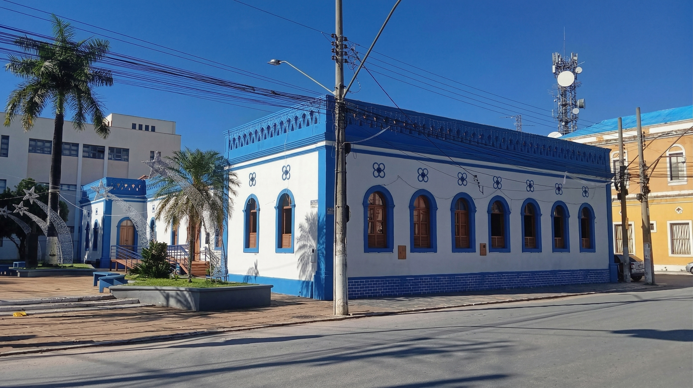

© Prefeitura Municipal de Januária
Centro de Apoio ao Turista (CAT)
Sua primeira parada para descobrir os encantos de Januária!
O Centro de Apoio ao Turista (CAT) é o espaço ideal para você planejar a sua jornada pela cidade. No local, os visitantes são acolhidos por profissionais prontos para fornecer todo o suporte necessário, garantindo que a experiência na região seja inesquecível, segura e rica em cultura.
O que o visistante encontra no CAT:
Com um atendimento personalisado, o turista tem acesso a:
- Informações Turísticas: Orientações detalhadas sobre os melhores passeios, praias fluviais, grutas e pontos de interesse da região.
- Patrimônio e Cultura: Guias e explicações aprofundadas sobre o rico patrimônio histórico e a cultura local de Januária.
- Dicas Práticas: Sugestões de gastronomia, eventos locais e as melhores rotas para explorar a cidade.
Localização
O CAT está estrategicamente localizado no coração da cidade, em um dos prédios mais importantes da cidade:
- Endereço: Rua Padre Henrique, 21, Centro - Prédio Histórico da Prefeitura de Januária.
- Referência: Próximo à orla do Rio São Francisco.
Horário de Funcionamento
Planeje sua visita:
- Segunda a Sexta-feira: 08:00 às 12:00 e das 14:00 às 18:00.
- Sábados e Domingos: Fechado.